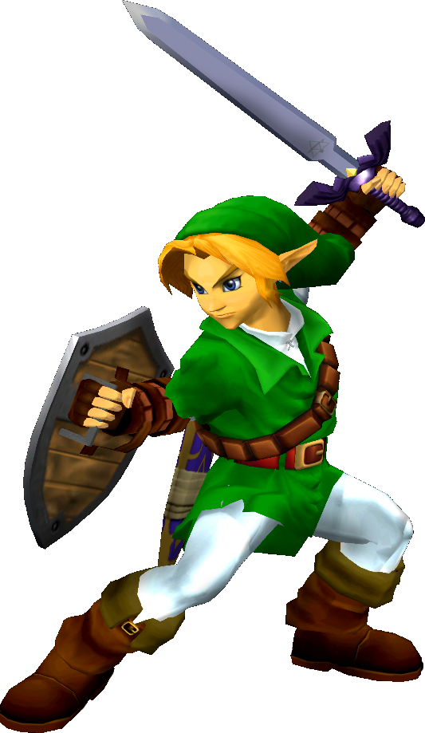

|  | Ranked 18th of tier list : LINK |
| Weight | |
|---|---|
| 6-7th heaviest | |
| Shield stats | |
| Roll lenght | 11th longest |
| Shield size | 8-9th biggest |
| Grab range | 2nd longest |
| Wavedash lenght | 24th longest |
| Movement stats | |
| Walking speed | 6-10th fastest |
| Turning speed | 19th fastest |
| Running speed | 23-24th fastest |
| Aerial stats | |
| Jump squat | 7 frames (23rd fastest) |
| Short hop | 16-17th highest |
| Aerial speed | 6-7th fastest |
| First jump height | 14th highest |
| Seconde jump height | 25th highest |
| Total jump height | 20-21th highest |
| Average fall speed | 8-10th fastest |
| Fast falling speed | 7-9th fastest |
| Falling speed | 7-9th fastest |
| Ledge stats | |
| 0-99% ledge roll | 14th longest |
| 100%+ ledge roll | 12th longest |
| 0-99% ledge attack range | 13th farthest |
| 100%+ ledge attack range | 2nd farthest |
| Intangible ledgedash (Optimal/Perfect) | 9/12 frames |
| Notable players | |
| The GERM, Aether | |
| Smashboard forum | |
| http://smashboards.com/forums/link.71/ | |
Link is ranked 18th in the tier list, in the E tier just two places below his clone, Young Link. Links placement is due to a very good approach due to some low lag aerials (with his neutral and forward air), a good variety of projectiles and a very high air speed. A disjointed hitbox also gives Link a slight advantage against others, as well as a fully functional shield that can block a wide variety of projectiles. Link is also a potent edgeguarder in the NTSC versions of the game; his Spin Attack is possibly the best semi-spike in the game, though he still has many other options. Link, however, suffers from a rather high falling speed and a high weight, making him an easy target for chain grabbing and combos. His recovery is also predictable, though he can extend it slightly.